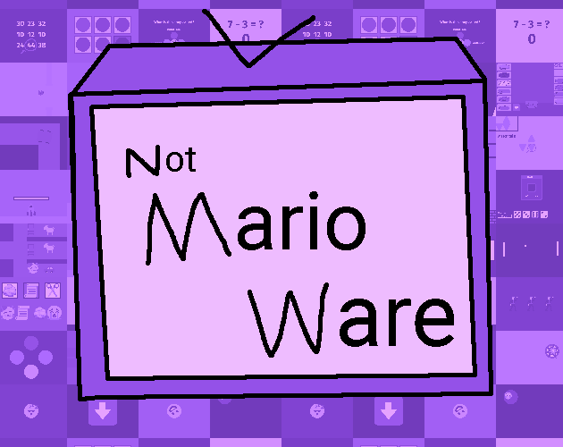
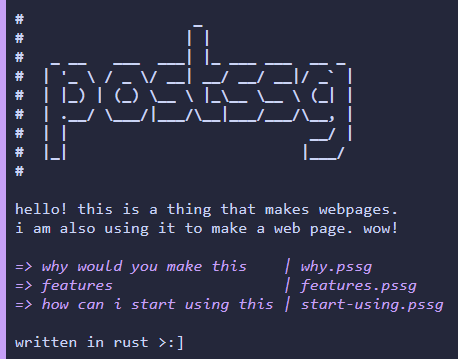
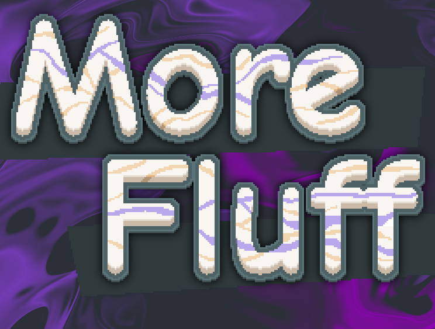
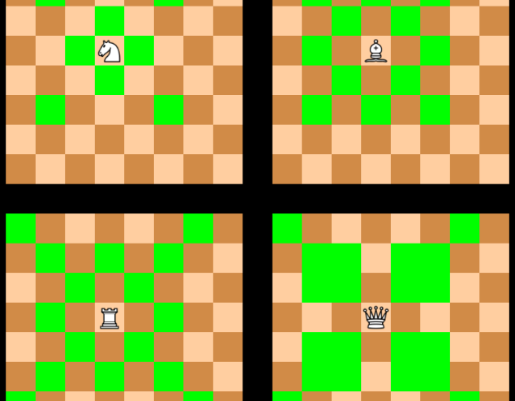
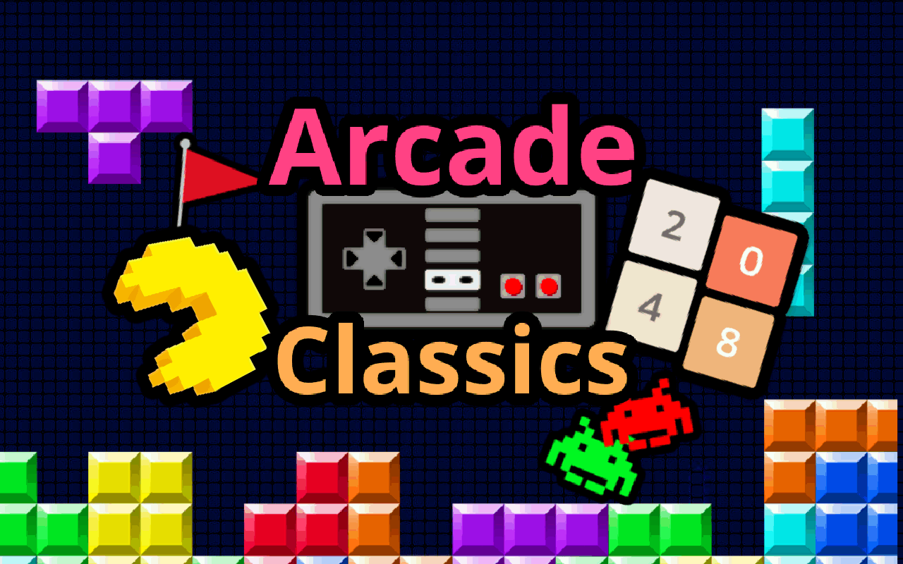

More website coming in the coming days.

notmarioware
(2023-2024)
A collection of 44 short "microgames", using Twemoji's emojis for a majority of the art. Contains local multiplayer and a daily challenge.

postssg
(2024)
A static site generator written in Rust. All text is placed in a <pre> tag as a stylistic choice.

More Fluff
(2024-)
A mod for the video game Balatro. Currently adds 45 jokers, a new consumeable type, and some other items.

Choos
(2023)
Chess but with different armies. Has online multiplayer.

Arcade Classics
(2020-2022)
A collection of 9 arcade games in a Chrome Extension. Made as part of a team.